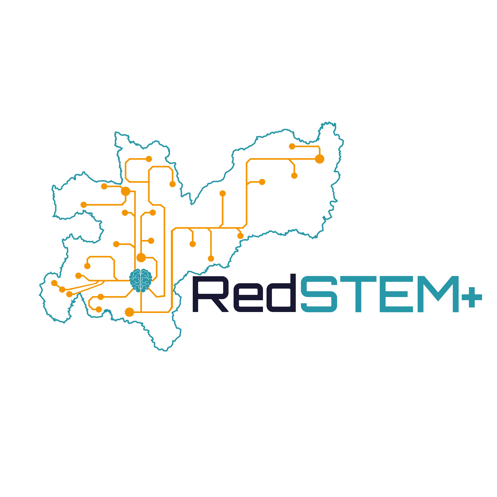

Reestructuración de Aulas STEAM
Fase de diagnóstico, levantamiento de requerimientos y optimización del Proyecto Estampilla para el departamento de Caldas y el municipio de Manizales.
Proceso de Evaluación y Viabilidad
Todos los requerimientos e ideales de mejora recolectados a través de esta encuesta pasarán por un proceso de evaluación de viabilidad por parte del equipo base del Aula STEM de la Universidad Nacional de Colombia como entidad ejecutora. Las aprobaciones finales estarán sujetas a la viabilidad presupuestal del proyecto y las normativas de adquisición de la Universidad como institución pública.
Esto activará de forma inteligente las secciones y preguntas específicas asociadas a sus competencias operativas y técnicas.
Sección
¡Respuestas Recopiladas!
La recolección de información ha finalizado con éxito. Sus respuestas han sido consolidadas localmente en el navegador.
Próxima Fase: Mesa Técnica de Aprobación
El equipo técnico y pedagógico del Aula STEM UNAL consolidará todas las encuestas en la matriz de requerimientos para evaluar el costo-beneficio, el ajuste normativo de contratación y la disponibilidad de presupuesto.